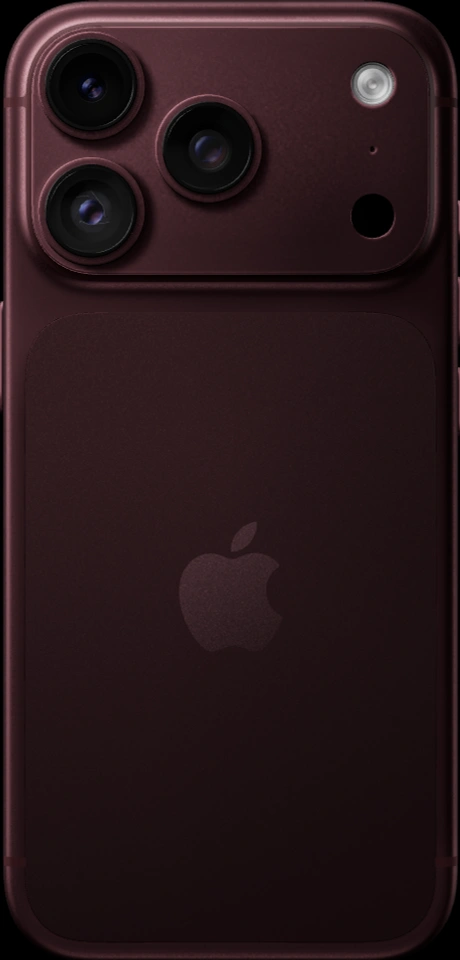
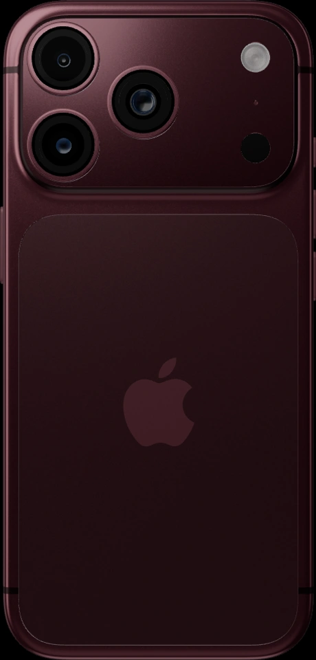
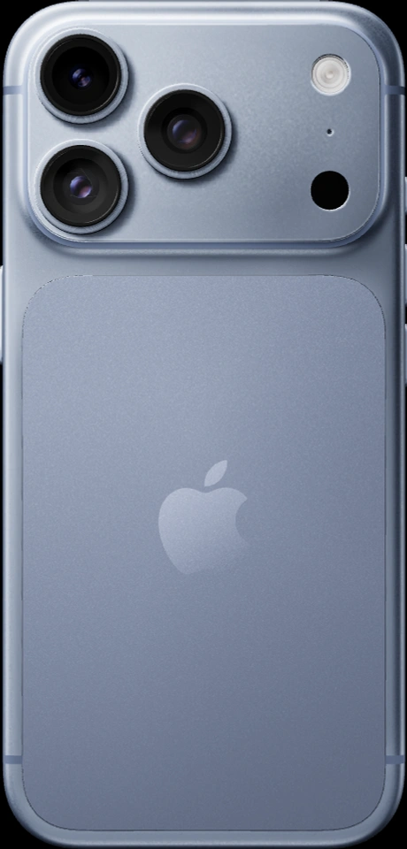
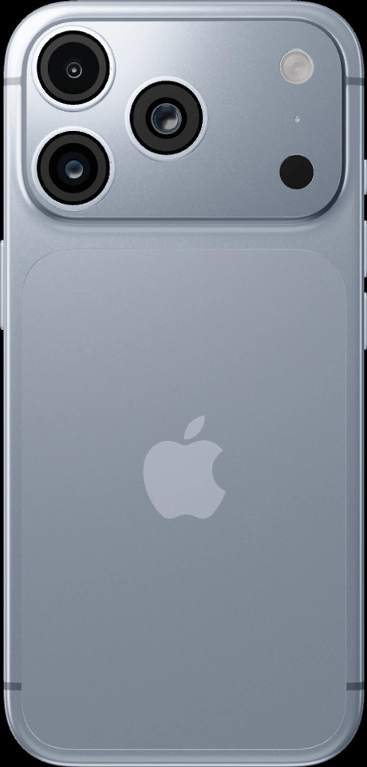
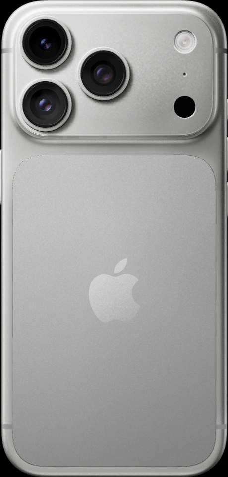
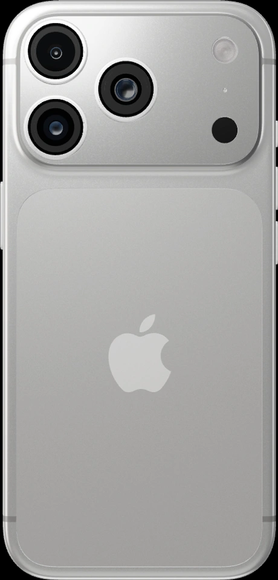
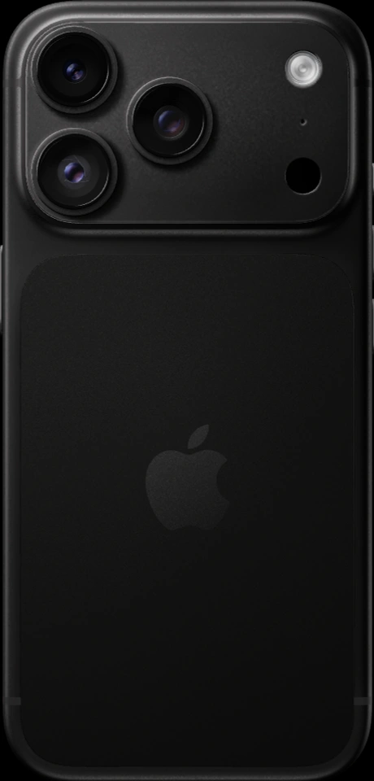
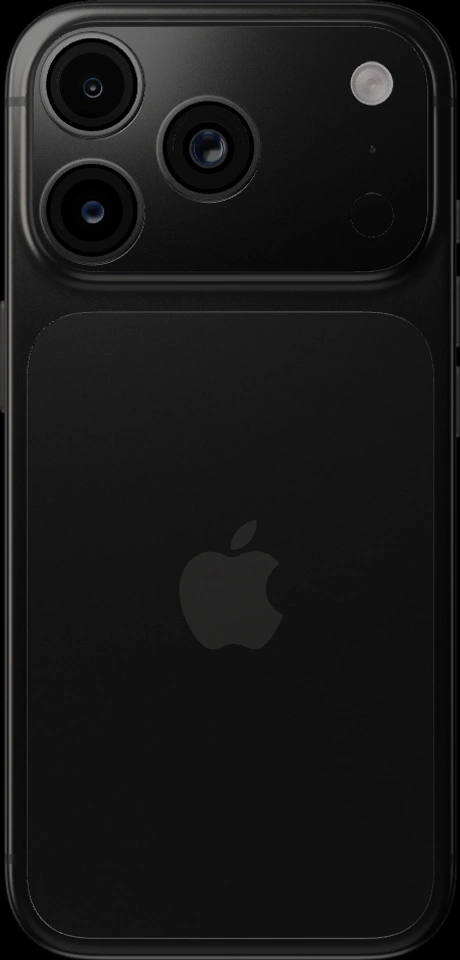

Слева — предоставленный скриншот, справа — текущий WebGL-рендер. Изображения выровнены по габаритам корпуса для сравнения; обработка цвета и дорисовка не применялись. Это диагностический прямой ракурс, а не замена интерактивной модели.
Полное совпадение не достигнуто: ещё различаются рисунок отражений линз, вспышка и распределение света на корпусе. По двумерным кадрам нельзя однозначно восстановить исходную световую сцену.







